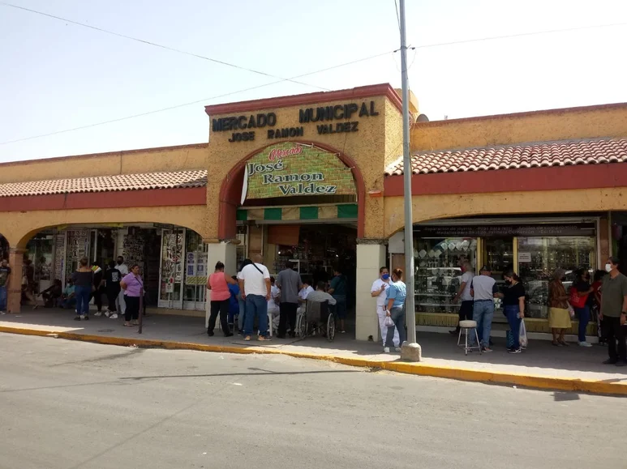

Explora
Lo Nuestro
Inicio
Recorridos
Blog
Contacto
Plaza de armas
armas
¡Explora Gomez Palacio!
Explora con nosotros los rincones que hacen de nuestra ciudad un lugar único y lleno de encanto.
TODOS
PARQUES
MERCADO
TURISMO
FERIA
IGLESIAS
EMBLEMATICO
HISTORIA
Conoce La Plaza de Armas Gomez Palacio
26 octubre 2024 - 10:56 pm
PARQUES
Leer más
Parroquia Sagrado Corazón de Jesus - Gomez Palacio
19 septiembre 2024 - 9:46 am
IGLESIAS
EMBLEMATICO
leer más
Parque La Esperanza - Gomez Palacio
26 octubre 2024 - 9:46 am
PARQUES
leer más

Mercado José Ramón Valdez, 104 años de historia en Gómez Palacio
31 octubre 2024 - 1:32 am
MERCADO
EMBLEMATICO
leer más
Catedral y Basílica Menor de Guadalupe - Gomez Palacio
05 septiembre - 3:40 pm
IGLESIAS
EMBLEMATICO
leer más
Recinto de la Revolución Gomez Palacio
26 septiembre 2024 - 1:22 pm
EMBLEMATICO
HISTORIA
TURISMO
leer más
Mirador y monumento “Cerro de la Pila”
12 noviembre 2024 - 3:56 pm
TURISMO
HISTORIA
leer más
Replica Torre Eiffel - Gomez Palacio
27 octubre - 6:45 pm
TURISMO
leer más
Parque Morelos - Gomez Palacio
12 noviembre 2024 - 3:56 pm
PARQUES
leer más
Barrio de las Banquetas Altas - Gomez Palacio
12 septiembre 2024 - 4:40 pm
HISTORIA
leer más
"La Cafetera Olvidada" - Gomez Palacio
30 septiembre 2024 - 3:57 pm
HISTORIA
leer más